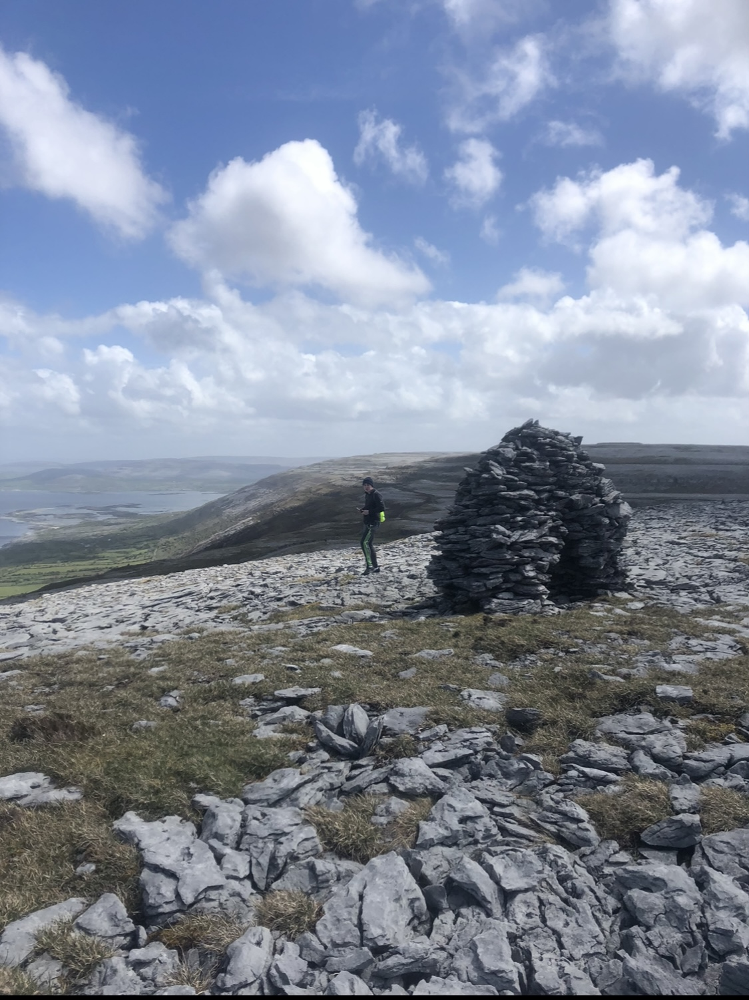

More About Me
Let me tell you all about my favourite pastime, hiking.
When I’m not in school or working, one of my favourite ways to blow off steam is by hiking. I initially thought hiking was a boring activity and would have much preferred chase a ball around, but during the initial lockdown when I couldn’t see my mates – a friend suggested hiking when the lockdown blew over and we’ve never looked back since.
Hiking became a way to meet up with my friends who I hadn’t seen in months, keep fit and enjoy some amazing views. In those moments when your legs are aching, your hearts going a million miles a second and you get a glimpse of what you’ve just conquered – time stands still. That’s why I love hiking, it gives me a great sense of freedom and achievement. I’m a also big fan of landscape photography, so hiking gives me a chance to snap some shots of some amazing scenery. My dream is to visit Mt. Fuji someday – not only to take pictures of the iconic goliath, but also to scale it.
I am fortunate enough to be from one of the most beautiful and unique places in the world, the Burren along the Wild Atlantic Way. Some of my fondest memories in recent years is driving down the coast to Black Head (Co. Clare), climbing up the mountain and setting up tents, before lighting a fire with some of my best mates. These are the moments I will look back on when I’m old.
